Kin Lane, the API Evangelist
Developing Your Company's Machine Learning Vocabulary
Machine Learning for the Enterprise International Conference
October 2018


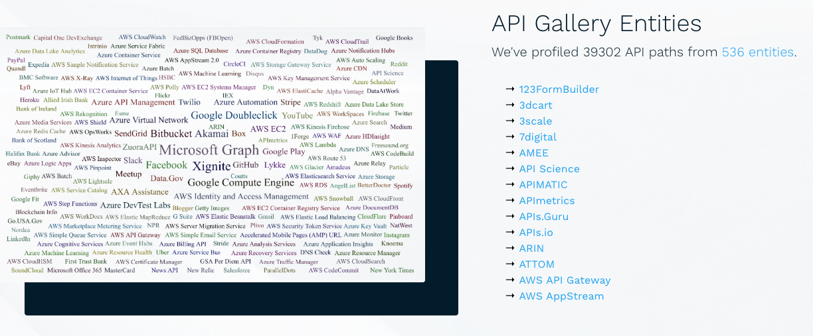
Profile APIs
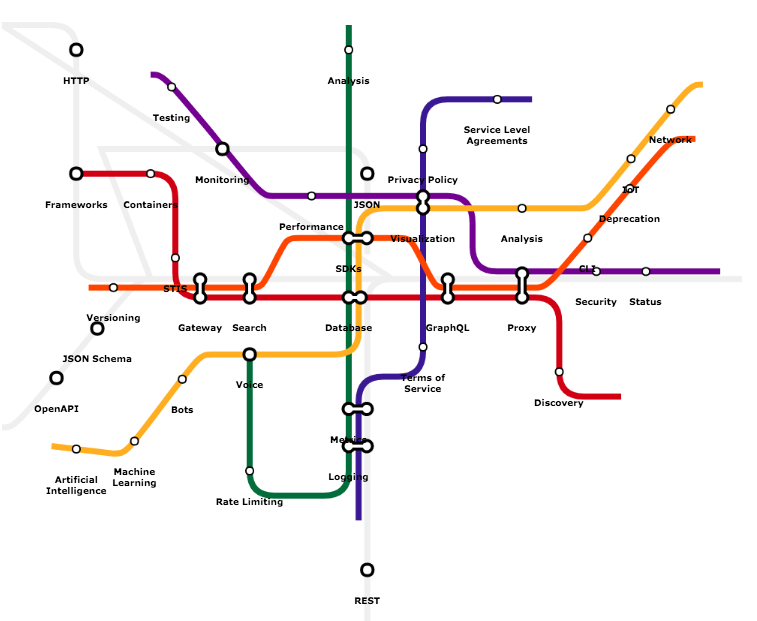
Map API Ecosystems

Quantify Value Generation
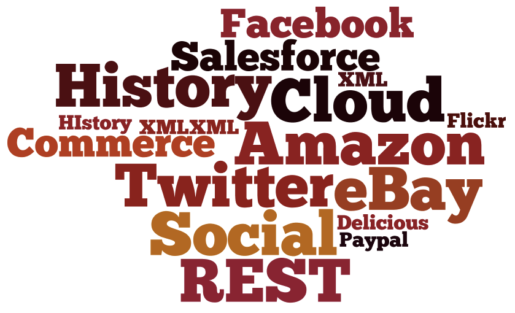
Study History of APIs
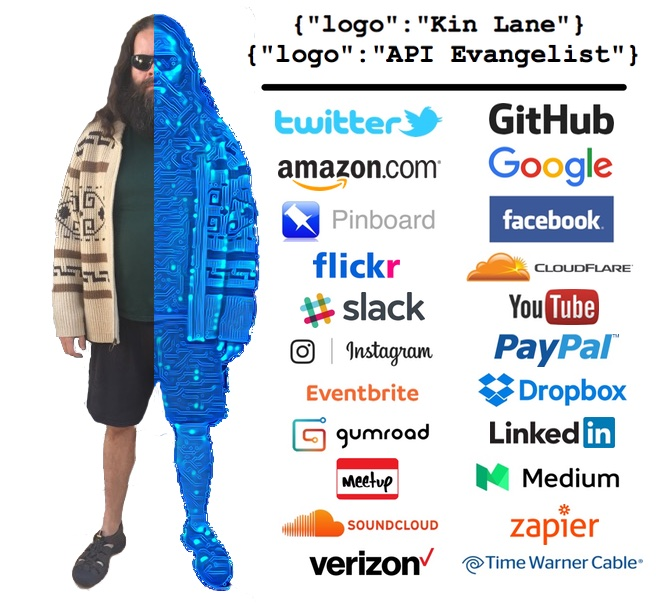
Understand Value Of Our Bits
Invested In API Definitions

OpenAPI (aka Swagger)
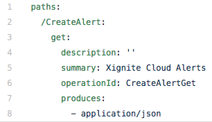
OpenAPI - Paths
OpenAPI - Verbs
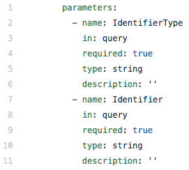
OpenAPI - Parameters
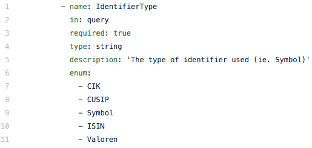
OpenAPI - Enums
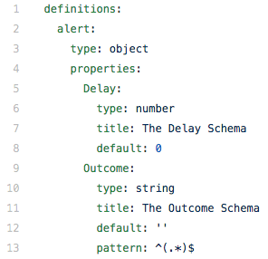
JSON Schema (Definitions)
Postman Collections (Runtime)
APIs.json (Operations)
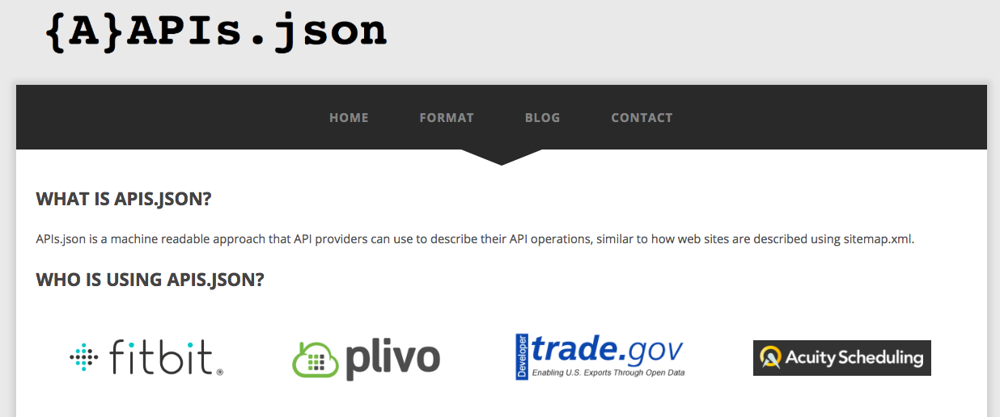
Investing Into API Discovery
Where Are All Of Our Digital Assets?
US Federal Government Digital Assets
Health & Human Services - 211
Non-Emergency Incidents - 311
Mapping Out Machine Learning
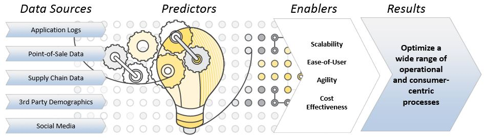
Machine Learning in AWS, Azure, and Google Cloud
Machine Learning Ecosystem
What Are Our Digital Capabilities?
Nouns & Verbs
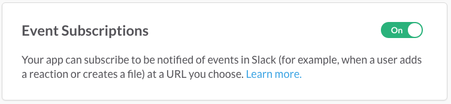
Event Types & Topics
Event-Driven Architecture
Internal Vocabulary
External Vocabulary
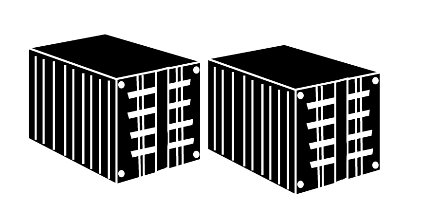
Wholesale Capabilities
Retail Capabilities
Cost & Value
Build or Consume
Reality and Quality
Opportunity
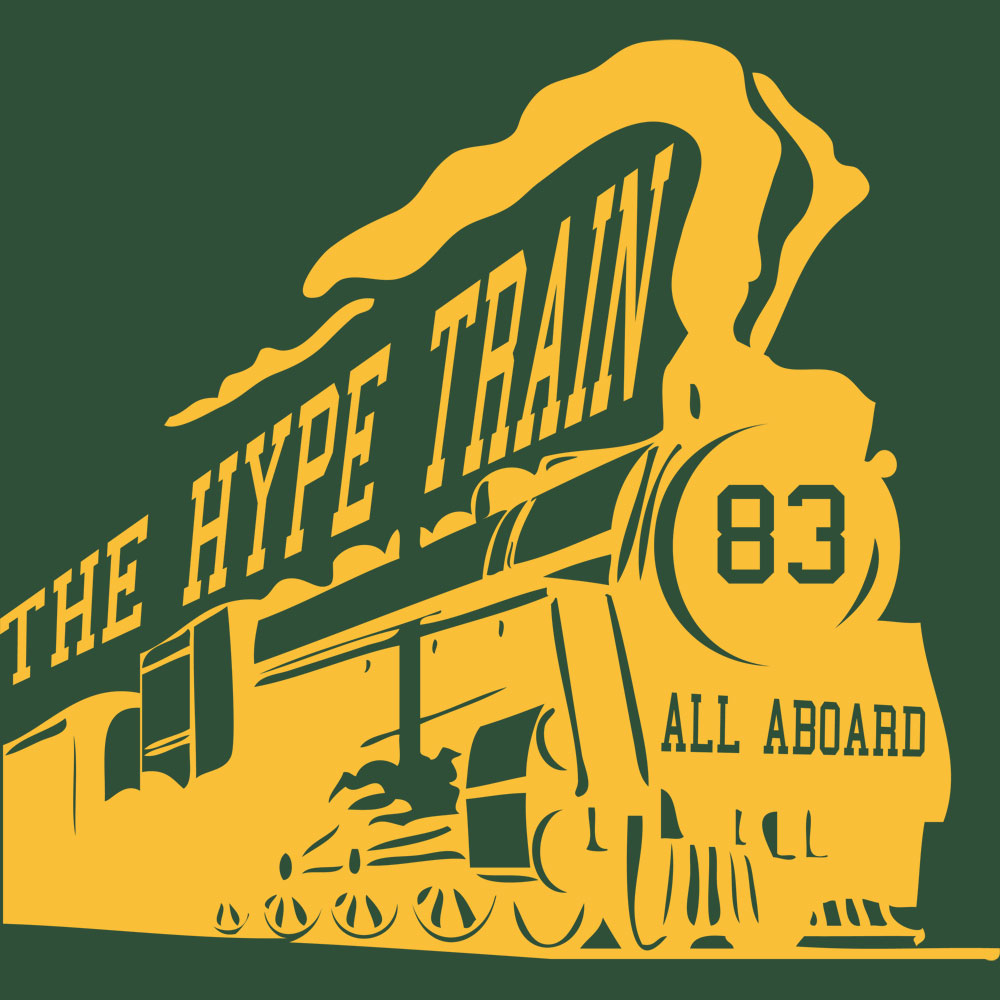
Understand Hype
Machine Learning Contracts w/ SLAs
Automating Action At Scale
Not Just Talk -- Action!
The End
By Kin Lane
@kinlane